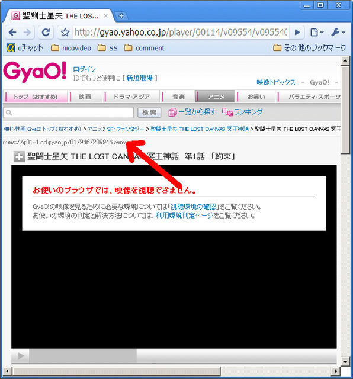
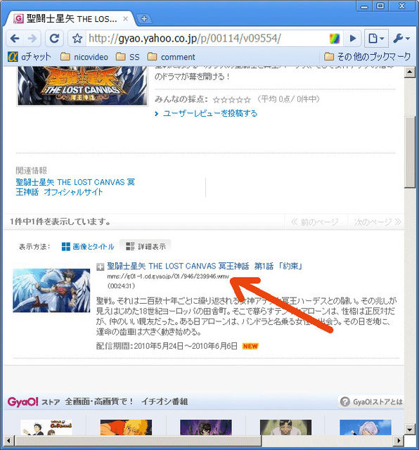

人気のある動画配信サイトのひとつとして Gyao があります。
しかし、このサイトは Google Chrome に対応していません。 Google Chrome でアクセスすると通常は以下のような文面が表示されるのみです。
お使いのブラウザでは、映像を視聴できません。
GyaO!の映像を見るために必要な環境については「視聴環境の確認」をご覧ください。
お使いの環境の判定と解決方法については、利用環境判定ページをご覧ください。
この拡張は Gyao の動画を視聴することを支援するものです。 実際の画面で説明します。
まず個別の動画ページのタイトルの上に、動画へダイレクトに繋げる URL が表示されるようになります。
シリーズ物であれば、一覧ページでの各タイトルの下にも表示されます。 (詳細表示モードのときに限る。)
表示された URL を Windows Media Pleyer 等の mms プロトコルに対応したプレイヤに入力すればそのまま視聴することが出来ます。
Gyao の動画データは DRM で保護されていることに留意下さい。 mms プロトコルに対応しているプレイヤでも DRM に対応していないこともあります。 また、 Windows 以外の環境においては DRM 保護付きの動画を再生可能なプレイヤはおそらくありません。
その他の注意点としては、ローカルの時計の時刻があっていることが必要です。 (多少のズレは許容される。) サーバと接続するために生成する認証用トークンは動画固有の ID と時刻の情報をハッシュ関数に通して生成されるためです。